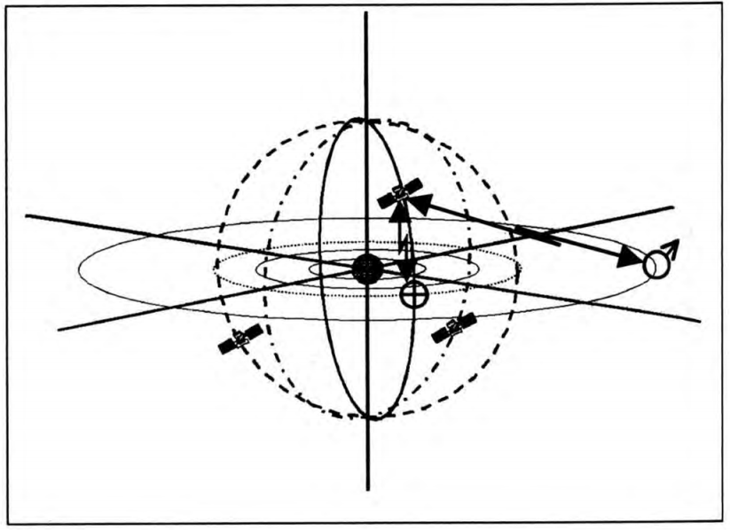

通信技术
行星际通信
行星际通信在人类探索太阳系一开始的时候就是极为重要的一个分支。在火星移民开始之后，更加需要可靠高效的行星际通信系统。
行星际通信中继
由于时常出现的太阳和其他行星的遮挡，行星际通信需要一个可靠的中继系统。星际通信公司首先建立起了太阳极轨道中继卫星。并且发展出了一套辅助中继卫星，例如行星间直接通信卫星等。

太阳极轨道中继卫星系统。只需要三颗卫星即可到达全太阳系中继的目的。
太阳帆技术逐渐成熟之后，新兴的 Home Range 通信（鸿雁通信）研发了一条非开普勒轨道的中继系统。第一个测试是地球-火星通信系统，采用太阳帆来让卫星维持在火星和地球上方的非开普勒轨道上。

地球-火星非开普勒轨道中继卫星。来源：A Novel Interplanetary Communications Relay [http://strathprints.strath.ac.uk/25836/2/Macdonald_M_-_strathprints_-_A_novel_interplanetary_communications_relay_Aug_2010.pdf]